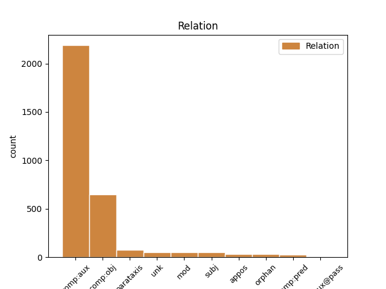
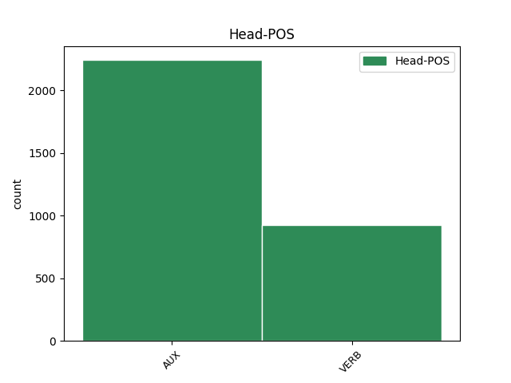
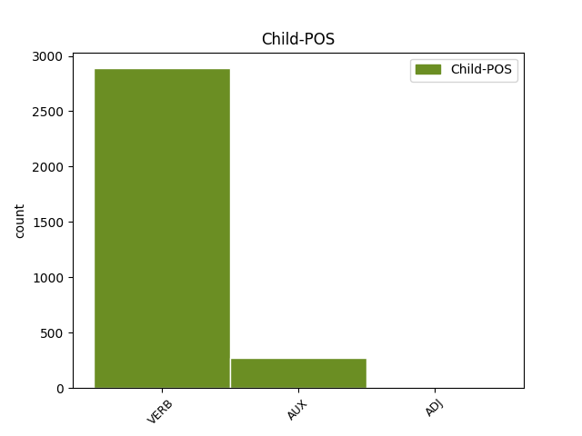

Distribution of features within this leaf



Agreement Rules sorted by frequency.
- When the dependent token is the direct object complements(comp:obj) of the head token,
1 Král _ _ _ _ 0 _ _ _
2 Šalamoun _ _ _ _ 0 _ _ _
3 vyprávěl vyprávět VERB VpMS----R-AA--- Animacy=Anim|Gender=Masc|Number=Sing|Polarity=Pos|Tense=Past|VerbForm=Part|Voice=Act 0 _ _ _
4 majiteli _ _ _ _ 0 _ _ _
5 , _ _ _ _ 0 _ _ _
6 co _ _ _ _ 0 _ _ _
7 mu _ _ _ _ 0 _ _ _
8 slavík _ _ _ _ 0 _ _ _
9 vyprávěl vyprávět VERB VpMS----R-AA--- Animacy=Anim|Gender=Masc|Number=Sing|Polarity=Pos|Tense=Past|VerbForm=Part|Voice=Act 3 comp:obj _ SpaceAfter=No
10 . _ _ _ _ 0 _ _ _
1 Celý _ _ _ _ 0 _ _ _
2 natěšený _ _ _ _ 0 _ _ _
3 chtěl _ _ _ _ 0 _ _ _
4 už _ _ _ _ 0 _ _ _
5 už _ _ _ _ 0 _ _ _
6 zavolat _ _ _ _ 0 _ _ _
7 na _ _ _ _ 0 _ _ _
8 svou _ _ _ _ 0 _ _ _
9 ženu _ _ _ _ 0 _ _ _
10 , _ _ _ _ 0 _ _ _
11 a _ _ _ _ 0 _ _ _
12 v _ _ _ _ 0 _ _ _
13 tom _ _ _ _ 0 _ _ _
14 otevřeným _ _ _ _ 0 _ _ _
15 oknem _ _ _ _ 0 _ _ _
16 do _ _ _ _ 0 _ _ _
17 ložnice _ _ _ _ 0 _ _ _
18 zaslechl zaslechnout VERB VpMS----R-AA--1 Animacy=Anim|Gender=Masc|Number=Sing|Polarity=Pos|Tense=Past|VerbForm=Part|Voice=Act 0 _ _ _
19 její _ _ _ _ 0 _ _ _
20 hlas _ _ _ _ 0 _ _ _
21 , _ _ _ _ 0 _ _ _
22 na _ _ _ _ 0 _ _ _
23 někoho _ _ _ _ 0 _ _ _
24 mluvila mluvit VERB VpFS----R-AA--- Gender=Fem|Number=Sing|Polarity=Pos|Tense=Past|VerbForm=Part|Voice=Act 18 parataxis _ SpaceAfter=No
25 . _ _ _ _ 0 _ _ _
1 " _ _ _ _ 0 _ _ _
2 Jsi být VERB VB-S---2P-AA--- Mood=Ind|Number=Sing|Person=2|Polarity=Pos|Tense=Pres|VerbForm=Fin|Voice=Act 0 _ _ _
3 tedy _ _ _ _ 0 _ _ _
4 v _ _ _ _ 0 _ _ _
5 nebi _ _ _ _ 0 _ _ _
6 , _ _ _ _ 0 _ _ _
7 " _ _ _ _ 0 _ _ _
8 oslovil _ _ _ _ 0 _ _ _
9 ho _ _ _ _ 0 _ _ _
10 , _ _ _ _ 0 _ _ _
11 " _ _ _ _ 0 _ _ _
12 jak _ _ _ _ 0 _ _ _
13 jsi být AUX VB-S---2P-AA--- Mood=Ind|Number=Sing|Person=2|Polarity=Pos|Tense=Pres|VerbForm=Fin|Voice=Act 2 mod _ _
14 si _ _ _ _ 0 _ _ _
15 přál _ _ _ _ 0 _ _ _
16 . _ _ _ _ 0 _ _ _
1 " _ _ _ _ 0 _ _ _
2 No _ _ _ _ 0 _ _ _
3 , _ _ _ _ 0 _ _ _
4 jak _ _ _ _ 0 _ _ _
5 to _ _ _ _ 0 _ _ _
6 mám _ _ _ _ 0 _ _ _
7 říct _ _ _ _ 0 _ _ _
8 ? _ _ _ _ 0 _ _ _
9 " _ _ _ _ 0 _ _ _
10 zdráhal zdráhat VERB VpMS----R-AA--- Animacy=Anim|Gender=Masc|Number=Sing|Polarity=Pos|Tense=Past|VerbForm=Part|Voice=Act 0 _ _ _
11 se _ _ _ _ 0 _ _ _
12 viditelně _ _ _ _ 0 _ _ _
13 rozpačitý _ _ _ _ 0 _ _ _
14 komisař _ _ _ _ 0 _ _ _
15 , _ _ _ _ 0 _ _ _
16 ale _ _ _ _ 0 _ _ _
17 pak _ _ _ _ 0 _ _ _
18 jako _ _ _ _ 0 _ _ _
19 by _ _ _ _ 0 _ _ _
20 si _ _ _ _ 0 _ _ _
21 právě _ _ _ _ 0 _ _ _
22 uvědomil _ _ _ _ 0 _ _ _
23 směšnost _ _ _ _ 0 _ _ _
24 situace _ _ _ _ 0 _ _ _
25 , _ _ _ _ 0 _ _ _
26 řekl říci VERB VpMS----R-AA--- Animacy=Anim|Gender=Masc|Number=Sing|Polarity=Pos|Tense=Past|VerbForm=Part|Voice=Act 10 orphan _ SpaceAfter=No
27 : _ _ _ _ 0 _ _ _
1 Každý _ _ _ _ 0 _ _ _
2 příběh _ _ _ _ 0 _ _ _
3 přináší přinášet VERB VB-S---3P-AA--- Mood=Ind|Number=Sing|Person=3|Polarity=Pos|Tense=Pres|VerbForm=Fin|Voice=Act 0 _ _ _
4 své _ _ _ _ 0 _ _ _
5 vlastní _ _ _ _ 0 _ _ _
6 poselství _ _ _ _ 0 _ _ _
7 a _ _ _ _ 0 _ _ _
8 má _ _ _ _ 0 _ _ _
9 osobité _ _ _ _ 0 _ _ _
10 účinky _ _ _ _ 0 _ _ _
11 : _ _ _ _ 0 _ _ _
12 některé _ _ _ _ 0 _ _ _
13 vybízí vybízet VERB VB-P---3P-AA--1 Mood=Ind|Number=Plur|Person=3|Polarity=Pos|Tense=Pres|VerbForm=Fin|Voice=Act 3 appos _ _
14 k _ _ _ _ 0 _ _ _
15 zamyšlení _ _ _ _ 0 _ _ _
16 , _ _ _ _ 0 _ _ _
17 jiné _ _ _ _ 0 _ _ _
18 promlouvají _ _ _ _ 0 _ _ _
19 k _ _ _ _ 0 _ _ _
20 pocitům _ _ _ _ 0 _ _ _
21 , _ _ _ _ 0 _ _ _
22 další _ _ _ _ 0 _ _ _
23 povzbuzují _ _ _ _ 0 _ _ _
24 mimické _ _ _ _ 0 _ _ _
25 svaly _ _ _ _ 0 _ _ _
26 k _ _ _ _ 0 _ _ _
27 úsměvu _ _ _ _ 0 _ _ _
28 ( _ _ _ _ 0 _ _ _
29 a _ _ _ _ 0 _ _ _
30 skrývají _ _ _ _ 0 _ _ _
31 možná _ _ _ _ 0 _ _ _
32 metafyzickou _ _ _ _ 0 _ _ _
33 otázku _ _ _ _ 0 _ _ _
34 ) _ _ _ _ 0 _ _ _
35 , _ _ _ _ 0 _ _ _
36 mnohé _ _ _ _ 0 _ _ _
37 dodávají _ _ _ _ 0 _ _ _
38 odvahy _ _ _ _ 0 _ _ _
39 - _ _ _ _ 0 _ _ _
40 ale _ _ _ _ 0 _ _ _
41 všechny _ _ _ _ 0 _ _ _
42 prospívají _ _ _ _ 0 _ _ _
43 duši _ _ _ _ 0 _ _ _
44 . _ _ _ _ 0 _ _ _
1 Co _ _ _ _ 0 _ _ _
2 myslíte myslet VERB VB-P---2P-AA--- Mood=Ind|Number=Plur|Person=2|Polarity=Pos|Tense=Pres|VerbForm=Fin|Voice=Act 0 _ _ _
3 : _ _ _ _ 0 _ _ _
4 když _ _ _ _ 0 _ _ _
5 váš _ _ _ _ 0 _ _ _
6 syn _ _ _ _ 0 _ _ _
7 dostane _ _ _ _ 0 _ _ _
8 horečku _ _ _ _ 0 _ _ _
9 , _ _ _ _ 0 _ _ _
10 mám mít VERB VB-S---1P-AA--- Mood=Ind|Number=Sing|Person=1|Polarity=Pos|Tense=Pres|VerbForm=Fin|Voice=Act 2 unk _ _
11 dát _ _ _ _ 0 _ _ _
12 léky _ _ _ _ 0 _ _ _
13 jeho _ _ _ _ 0 _ _ _
14 sluhům _ _ _ _ 0 _ _ _
15 , _ _ _ _ 0 _ _ _
16 a _ _ _ _ 0 _ _ _
17 ne _ _ _ _ 0 _ _ _
18 jemu _ _ _ _ 0 _ _ _
19 ? _ _ _ _ 0 _ _ _
20 " _ _ _ _ 0 _ _ _
1 Uběhly _ _ _ _ 0 _ _ _
2 týdny _ _ _ _ 0 _ _ _
3 a _ _ _ _ 0 _ _ _
4 měsíce _ _ _ _ 0 _ _ _
5 a _ _ _ _ 0 _ _ _
6 oběma _ _ _ _ 0 _ _ _
7 bratrům _ _ _ _ 0 _ _ _
8 neuniklo uniknout VERB VpNS----R-NA--1 Gender=Neut|Number=Sing|Polarity=Neg|Tense=Past|VerbForm=Part|Voice=Act 0 _ _ _
9 , _ _ _ _ 0 _ _ _
10 jak _ _ _ _ 0 _ _ _
11 moc _ _ _ _ 0 _ _ _
12 se _ _ _ _ 0 _ _ _
13 změnili změnit VERB VpMP----R-AA--- Animacy=Anim|Gender=Masc|Number=Plur|Polarity=Pos|Tense=Past|VerbForm=Part|Voice=Act 8 subj _ SpaceAfter=No
14 . _ _ _ _ 0 _ _ _
1 A _ _ _ _ 0 _ _ _
2 vžil _ _ _ _ 0 _ _ _
3 se _ _ _ _ 0 _ _ _
4 do _ _ _ _ 0 _ _ _
5 svého _ _ _ _ 0 _ _ _
6 vyprávění _ _ _ _ 0 _ _ _
7 natolik _ _ _ _ 0 _ _ _
8 , _ _ _ _ 0 _ _ _
9 že _ _ _ _ 0 _ _ _
10 sám _ _ _ _ 0 _ _ _
11 začal _ _ _ _ 0 _ _ _
12 zvedat _ _ _ _ 0 _ _ _
13 ruce _ _ _ _ 0 _ _ _
14 a _ _ _ _ 0 _ _ _
15 nohy _ _ _ _ 0 _ _ _
16 , _ _ _ _ 0 _ _ _
17 poskakoval _ _ _ _ 0 _ _ _
18 a _ _ _ _ 0 _ _ _
19 tančil _ _ _ _ 0 _ _ _
20 po _ _ _ _ 0 _ _ _
21 pokoji _ _ _ _ 0 _ _ _
22 , _ _ _ _ 0 _ _ _
23 jakoby _ _ _ _ 0 _ _ _
24 byl být AUX VpMS----R-AA--- Animacy=Anim|Gender=Masc|Number=Sing|Polarity=Pos|Tense=Past|VerbForm=Part|Voice=Act 0 _ _ _
25 nikdy _ _ _ _ 0 _ _ _
26 revma _ _ _ _ 0 _ _ _
27 neměl mít VERB VpMS----R-NA--- Animacy=Anim|Gender=Masc|Number=Sing|Polarity=Neg|Tense=Past|VerbForm=Part|Voice=Act 24 comp:aux _ SpaceAfter=No
28 . _ _ _ _ 0 _ _ _
1 " _ _ _ _ 0 _ _ _
2 Kdy _ _ _ _ 0 _ _ _
3 přijde _ _ _ _ 0 _ _ _
4 ? _ _ _ _ 0 _ _ _
5 " _ _ _ _ 0 _ _ _
6 ptám ptát VERB VB-S---1P-AA--- Mood=Ind|Number=Sing|Person=1|Polarity=Pos|Tense=Pres|VerbForm=Fin|Voice=Act 0 _ _ _
7 se _ _ _ _ 0 _ _ _
8 , _ _ _ _ 0 _ _ _
9 domnívajíc domnívat VERB VeFS------A---- Aspect=Imp|Gender=Fem|Number=Sing|Polarity=Pos|Tense=Pres|VerbForm=Conv|Voice=Act 6 comp:pred _ _
10 se _ _ _ _ 0 _ _ _
11 , _ _ _ _ 0 _ _ _
12 že _ _ _ _ 0 _ _ _
13 mluví _ _ _ _ 0 _ _ _
14 v _ _ _ _ 0 _ _ _
15 čase _ _ _ _ 0 _ _ _
16 budoucím _ _ _ _ 0 _ _ _
17 . _ _ _ _ 0 _ _ _
Disagree Examples:
1 Měla _ _ _ _ 0 _ _ _
2 na _ _ _ _ 0 _ _ _
3 ruce _ _ _ _ 0 _ _ _
4 nejkrásnější _ _ _ _ 0 _ _ _
5 náramek _ _ _ _ 0 _ _ _
6 , _ _ _ _ 0 _ _ _
7 jaký _ _ _ _ 0 _ _ _
8 jsem být AUX VB-S---1P-AA--- Mood=Ind|Number=Sing|Person=1|Polarity=Pos|Tense=Pres|VerbForm=Fin|Voice=Act 0 _ _ _
9 kdy _ _ _ _ 0 _ _ _
10 viděl vidět VERB VpMS----R-AA--- Animacy=Anim|Gender=Masc|Number=Sing|Polarity=Pos|Tense=Past|VerbForm=Part|Voice=Act 8 comp:aux _ _
11 - _ _ _ _ 0 _ _ _
12 secesní _ _ _ _ 0 _ _ _
13 víla _ _ _ _ 0 _ _ _
14 se _ _ _ _ 0 _ _ _
15 na _ _ _ _ 0 _ _ _
16 něm _ _ _ _ 0 _ _ _
17 proplétala _ _ _ _ 0 _ _ _
18 mezi _ _ _ _ 0 _ _ _
19 brilianty _ _ _ _ 0 _ _ _
20 a _ _ _ _ 0 _ _ _
21 smaragdy _ _ _ _ 0 _ _ _
22 . _ _ _ _ 0 _ _ _
1 " _ _ _ _ 0 _ _ _
2 Hezčí _ _ _ _ 0 _ _ _
3 šperk _ _ _ _ 0 _ _ _
4 jsem být AUX VB-S---1P-AA--- Mood=Ind|Number=Sing|Person=1|Polarity=Pos|Tense=Pres|VerbForm=Fin|Voice=Act 9 comp:obj _ _
5 ještě _ _ _ _ 0 _ _ _
6 neviděl _ _ _ _ 0 _ _ _
7 , _ _ _ _ 0 _ _ _
8 " _ _ _ _ 0 _ _ _
9 řekl říci VERB VpMS----R-AA--- Animacy=Anim|Gender=Masc|Number=Sing|Polarity=Pos|Tense=Past|VerbForm=Part|Voice=Act 0 _ _ _
10 jsem _ _ _ _ 0 _ _ _
11 . _ _ _ _ 0 _ _ _
1 " _ _ _ _ 0 _ _ _
2 Hezčí _ _ _ _ 0 _ _ _
3 šperk _ _ _ _ 0 _ _ _
4 jsem být AUX VB-S---1P-AA--- Mood=Ind|Number=Sing|Person=1|Polarity=Pos|Tense=Pres|VerbForm=Fin|Voice=Act 0 _ _ _
5 ještě _ _ _ _ 0 _ _ _
6 neviděl vidět VERB VpMS----R-NA--- Animacy=Anim|Gender=Masc|Number=Sing|Polarity=Neg|Tense=Past|VerbForm=Part|Voice=Act 4 comp:aux _ SpaceAfter=No
7 , _ _ _ _ 0 _ _ _
8 " _ _ _ _ 0 _ _ _
9 řekl _ _ _ _ 0 _ _ _
10 jsem _ _ _ _ 0 _ _ _
11 . _ _ _ _ 0 _ _ _
1 " _ _ _ _ 0 _ _ _
2 Hezčí _ _ _ _ 0 _ _ _
3 šperk _ _ _ _ 0 _ _ _
4 jsem _ _ _ _ 0 _ _ _
5 ještě _ _ _ _ 0 _ _ _
6 neviděl _ _ _ _ 0 _ _ _
7 , _ _ _ _ 0 _ _ _
8 " _ _ _ _ 0 _ _ _
9 řekl říci VERB VpMS----R-AA--- Animacy=Anim|Gender=Masc|Number=Sing|Polarity=Pos|Tense=Past|VerbForm=Part|Voice=Act 10 comp:aux _ _
10 jsem být AUX VB-S---1P-AA--- Mood=Ind|Number=Sing|Person=1|Polarity=Pos|Tense=Pres|VerbForm=Fin|Voice=Act 0 _ _ _
11 . _ _ _ _ 0 _ _ _
1 " _ _ _ _ 0 _ _ _
2 Snad _ _ _ _ 0 _ _ _
3 si _ _ _ _ 0 _ _ _
4 říkáte říkat VERB VB-P---2P-AA--- Mood=Ind|Number=Plur|Person=2|Polarity=Pos|Tense=Pres|VerbForm=Fin|Voice=Act 0 _ _ _
5 - _ _ _ _ 0 _ _ _
6 ta _ _ _ _ 0 _ _ _
7 bude být AUX VB-S---3F-AA--- Mood=Ind|Number=Sing|Person=3|Polarity=Pos|Tense=Fut|VerbForm=Fin|Voice=Act 4 comp:obj _ _
8 mít _ _ _ _ 0 _ _ _
9 hodně _ _ _ _ 0 _ _ _
10 pěkných _ _ _ _ 0 _ _ _
11 šperků _ _ _ _ 0 _ _ _
12 , _ _ _ _ 0 _ _ _
13 " _ _ _ _ 0 _ _ _
14 usmála _ _ _ _ 0 _ _ _
15 se _ _ _ _ 0 _ _ _
16 na _ _ _ _ 0 _ _ _
17 mě _ _ _ _ 0 _ _ _
18 . _ _ _ _ 0 _ _ _